devices in series need
devices in series need Method
- Write
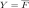
with in AND/OR form; pull-down: AND → series NMOS, OR → parallel NMOS.
in AND/OR form; pull-down: AND → series NMOS, OR → parallel NMOS. - Pull-up: the dual (series ↔ parallel) with PMOS (Wanlass and Sah 1963).
- Reference inverter
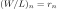
,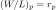
gives the target delay (delay). - For each network find the longest series chain
 in any conducting path: size those devices
in any conducting path: size those devices 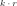
. Parallel devices each get the single-device size (worst case = only one conducting). - Delay estimate: equivalent inverter with
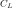
including internal diffusion capacitances.
Examples
| gate | NMOS (pull-down) | PMOS (pull-up) |
|---|---|---|
| NAND2 | 2 in series, each 2r_n | 2 in parallel, each r_p |
| NOR2 | 2 in parallel, each r_n | 2 in series, each 2r_p |
| NAND3 | 3 series, each 3r_n | 3 parallel, each r_p |
| AB + CD (AOI) | 2 parallel branches of 2 | 2 series groups of 2 par. |
For
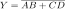
: NMOS each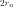
; PMOS: (A∥B) in series with (C∥D), each .Worked example
Reference
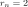
,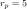
(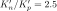
). NAND3: NMOS 6/1 each, PMOS 5/1 each, total width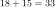
. NOR3: NMOS 2/1, PMOS 15/1 each, total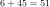
— NOR3 is 55% larger and has more input capacitance (slower for the previous stage).Engineering applications
Standard-cell libraries (NAND/NOR/AOI/OAI/XOR cells in several drive strengths), synthesis technology mapping, critical-path optimisation (reordering inputs: the late-arriving signal on the transistor nearest the output).
Pitfall
Internal node capacitances in series stacks add delay and can cause charge sharing; and the "worst case" for rise and fall are different input combinations.